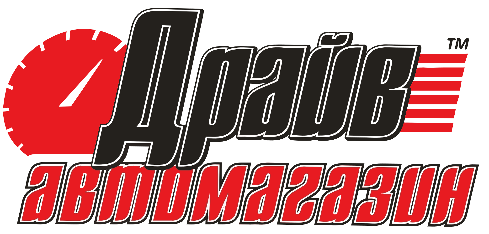

Варіант C — спідометр і лінії руху червоні. Фавікон — літера «Д», вирізана з того самого контуру, на світлій плашці.
Біла плашка
Версія для чорного — червоне лишається
Інверсія фільтром — червоне гасне в сірий
Ніжки «Д» і «р» тут закінчуються по краю полотна. Витягти їхню повну форму з файлу не вийшло: нижче краю лежать не самі літери, а уламки трасування, спільні з червоним рядком.
Знак має власну білу підкладку — між ніжками «Д» вона перекриває фон. Тому ставити його лише на біле; на чорному — у білій плашці або з інверсією, як у футері.

У повному локу «Д» і «р» мають ніжки повністю — вони заходять під «автомагазин». Це та сама геометрія, що й в однорядковому знаку, тільки з вищим полотном.
В однорядковому файлі ніжки й біла обводка закінчуються рівно по краю полотна — тому там і виникає відчуття підрізу. Для шапки й дрібних розмірів це працює, для великих краще брати повний лок.
Світла плашка
У вкладці
Світла плашка тримає форму і в темній темі браузера — літера не зливається з фоном вкладки.